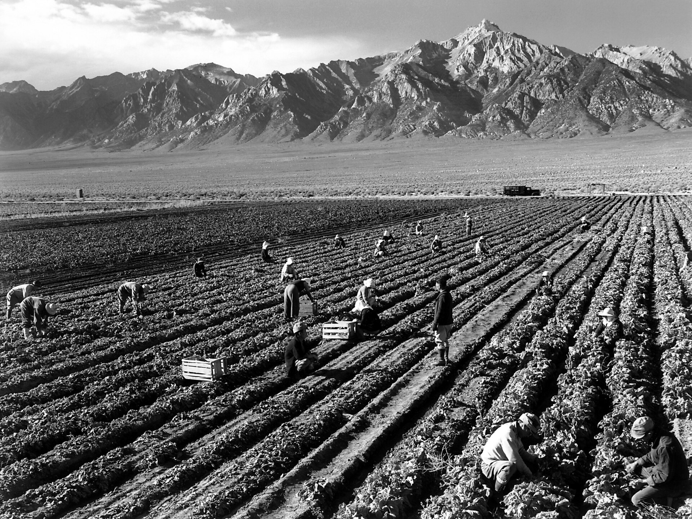

Directions: Fill in the chart as we study each document in the Contradiction File. Keep this page in your notebook. You will use it again on the review day before the unit test.

| Document or record | Who gained a claim | Who was denied | The reason given |
|---|---|---|---|
| Executive Order 8802, 1941 | |||
| The Double V campaign, 1942 | |||
| The Tuskegee record | |||
| Executive Order 9066, 1942 | |||
| Korematsu v. United States, 1944 |
The contradiction in one paragraph. Using at least three rows of the chart, write a paragraph that answers the lesson question. How did a war fought in democracy's name test democracy at home?
| Document or record | Who gained a claim | Who was denied | The reason given |
|---|---|---|---|
| Executive Order 8802, 1941 | Black workers in defense industries and federal jobs, who gained a written federal claim against discrimination and a committee to hear complaints. | No group lost ground under the order itself. Its limit fell on the claimants, because the committee could investigate and publicize but could not compel a firm to hire. | The order gave two reasons together: the democratic way of life could be defended only with the support of all groups, and barred workers damaged morale, unity, and defense production. |
| The Double V campaign, 1942 | Black Americans, who claimed full citizenship as a war aim through the Black press and its readers across the country. | The campaign records a denial still standing: segregation in the services and discrimination in war work continued while the claim was pressed. | The campaign's own reason: a country asking Black Americans to fight fascism abroad owed them the defeat of racism at home in the same war. |
| The Tuskegee record | The pilots and crews of the 99th Pursuit Squadron and the 332nd Fighter Group, whose escort record answered the policy that had doubted them. | Black servicemen as a body, most of whom the segregated military assigned to labor and service units rather than combat roles. | The military's policy rested on claims about the proper place and performance of Black troops. The station gives the record, not the policy's defense, and the record contradicts the claim. |
| Executive Order 9066, 1942 | No one gained a claim under this order. Military commanders gained power, which is a different thing from a claim on democracy. | About 120,000 people of Japanese ancestry on the West Coast, two thirds of them American citizens, removed from their homes to ten camps. | The order states no reason in its text. It grants power whenever a commander deems action necessary or desirable and leaves restrictions to his discretion. |
| Korematsu v. United States, 1944 | No claimant gained. The government gained a ruling that its exclusion order could stand. | Fred Korematsu and the excluded people whose case he carried, citizens included, denied the right to remain in their homes. | The majority's reason was pressing public necessity in wartime, stated as the principle that the power to protect must match the threatened danger. |
The contradiction in one paragraph. Strong answers join the two halves of the chart. The war years opened war work under a federal order, produced a national campaign that claimed citizenship as a war aim, and put a decorated service record on file, and in the same years the government removed about 120,000 people on ancestry alone and the Supreme Court let the removal stand. A paragraph that uses only the gains or only the denial has answered half the lesson question.